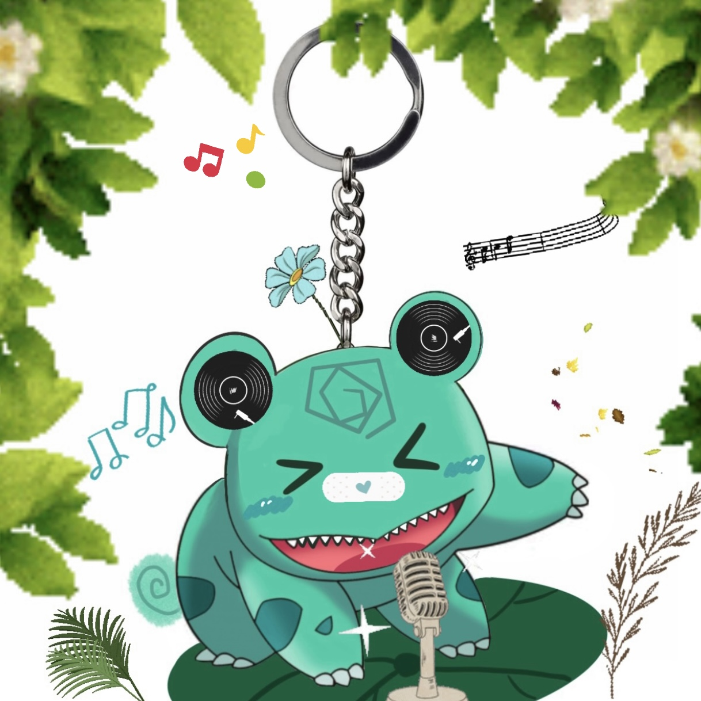

Lucas, 2066
Lucas
Name: Lucas
size: 36 mm x 36 mm
Price: AU$52
Personality: naughty, quirky, cheerful
Speciality: singing, dancing
Favourite color: green
Description: Lucas is based on Bulbasaur, we have changed his pointed ears to round ears, as well as his expression we have changed to winking eyes, and adding more small teeth. For the decoration we made two records on the ears and he sits on a lotus leaf with this microphone on it, accompanied by a lot of musical notes. If you like the nature style and love to listen to music you can choose this pocket baby.